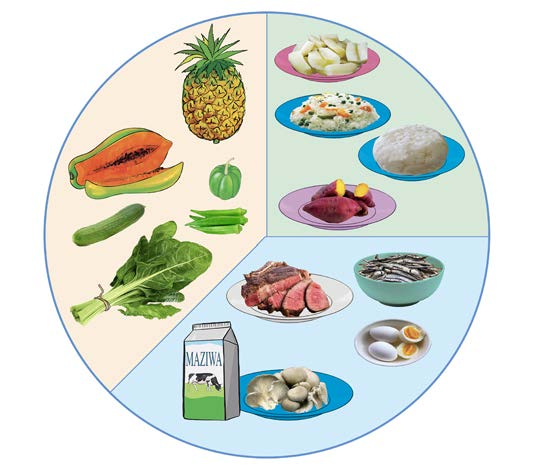

vyakula hivyo humsaidia mgonjwa kuimarisha misuli, mifupa na kinga ya mwili.
Vilevile, mahitaji ya vyakula kwa wagonjwa hutofautiana kulingana na aina ya ugonjwa. Hivyo, wagonjwa wanatakiwa kula mlo kamili kwa kuzingatia masharti na maelekezo ya wataalamu wa afya. Kielelezo namba 10 kinaonesha na kinaeleza mlo kamili wa mgonjwa.
Vyakula vya kulinda mwili

Kielelezo namba 10: Mlo kamili wa mgonjwa
Vyakula vya kuupa mwili nguvu
Vyakula vya kujenga mwili
Zoezi namba 1
1.
Maria alikula wali na nyama siku ya Jumatatu. Je, huu ni mlo kamili? Eleza sababu.
2.
Pangilia mlo kamili kwa ajili ya mgonjwa kwa kutumia vyakula vinavyopatikana nyumbani. Eleza sababu za kujumuisha aina hizo za vyakula kwenye mlo huo.
3.
Eleza tofauti ya mahitaji kati ya mlo wa mtoto na mtu anayefanya kazi za kutumia nguvu nyingi.